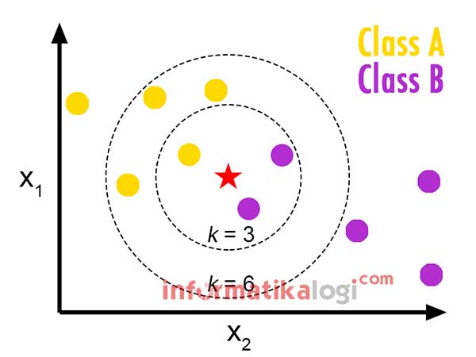
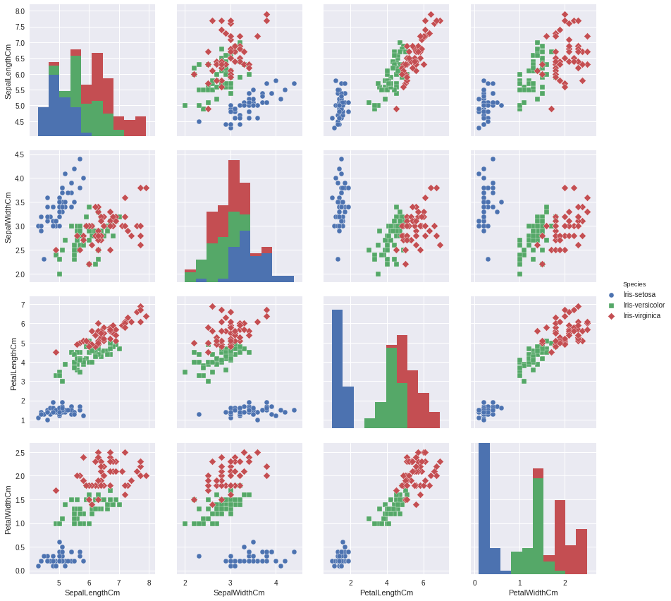

KNN
k-Nearest Neighbors (k-NN) Algoritma¶
Pengertian k-NN¶
K-nearest neighbors atau knn adalah algoritma yang berfungsi untuk melakukan klasifikasi suatu data berdasarkan data pembelajaran (train data sets), yang diambil dari k tetangga terdekatnya (nearest neighbors) yang sudah terklasikasi sebelumnya. Dengan k merupakan banyaknya tetangga terdekat. k-NN termasuk dalam Supervised Learning, dimana hasil query instance yang baru diklasifiksikan berdasarkan mayoritas kedekatan jarak dari kategori yang ada dalam k-NN.
KNN telah digunakan dalam estimasi statistik dan pengenalan pola di awal tahun 1970-an sebagai teknik non-parametrik, yang berarti tidak membuat asumsi pada distribusi data. Tujuan dari algoritma knn adalah untuk mengklasifikasikan objek baru berdasarkan atribut dan data sample dari data training. Algoritma k-NN menggunakan Neighborhood Classification sebagai nilai prediksi dari nilai instance yang baru.
Untuk lebih memahami seperti apa k-NN itu mari simak ilustrasi cerita dari k-NN sebagai berikut yang dikutip dari https://informatikalogi.com/algoritma-k-nn-k-nearest-neighbor/ :
Bertanya pada Tetangga – Anda diundang ke sebuah pertemuan. Namun, Anda tidak tahu tema dari pertemuan tersebut, maupun kegiatan apa saja yang akan dilakukan di pertemuan tersebut. Anda benar-benar tidak tahu apakah pertemuan itu akan bermanfaat atau tidak untuk Anda. Yang Anda tahu, beberapa orang teman Anda juga diundang ke acara yang sama. Dalam kondisi seperti itu, apa yang Anda lakukan?
**Cara yang biasanya dilakukan oleh banyak orang dalam menangani masalah seperti itu adalah dengan bertanya kepada teman-teman apakah mereka akan datang ke pertemuan tersebut atau tidak. Biasanya, orang-orang yang pertama ditanya adalah orang-orang yang dekat dengan Anda. Maka, Anda mencoba mengontak enam orang teman yang biasa jadi teman main Anda. Dari enam orang tersebut, empat orang menyatakan akan datang, tapi dua orang ternyata memutuskan tidak datang, entah mengapa alasannya. Keputusan apa yang Anda akan ambil?*
Kasus di atas menggambarkan ide dari algoritma k-Nearest Neighbours (kNN). Anda ingin mengambil sebuah keputusan (kelas) antara datang atau tidak datang ke sebuah pertemuan. Untuk mendukung pengambilan keputusan tersebut, Anda melihat mayoritas dari keputusan teman-teman Anda (instance lainnya). Teman-teman tersebut Anda pilih berdasarkan kedekatannya dengan Anda. Ukuran kedekatan pertemanan ini bisa bermacam-macam: tetangga, satu hobi, satu kelas, atau hal-hal lainnya. Ukuran-ukuran tersebut bisa juga digunakan bersamaan, misalnya si A itu tetangga, satu hobi, dan satu kelas; sedangkan si B hanya satu kelas saja.*

Gambar di atas menggambarkan ide dari algoritma k-Nearest Neighbours (k-NN). Anda ingin mengambil sebuah keputusan (kelas) antara datang atau tidak datang ke sebuah pertemuan. Untuk mendukung pengambilan keputusan tersebut, Anda melihat mayoritas dari keputusan teman atau tetangga Anda (instance lainnya). Teman atau tetangga tersebut Anda pilih berdasarkankedekatannya dengan Anda. Ukuran kedekatan pertemanan ini bisa bermacam-macam: satu hobi, satu kelas, atau hal-hal lainnya. Ukuran-ukuran tersebut bisa juga digunakan bersamaan, misalnya si A itu tetangga, satu hobi, dan satu kelas; sedangkan si B hanya satu kelas saja.
Dikutip dari https://informatikalogi.com/algoritma-k-nn-k-nearest-neighbor/
Contoh lainnya :

jika nilai k = 3 maka, ditetapkan menjadi kelas B.
jika nilai k = 6 maka, ditetapkan menjadi kelas A.
k-NN dapat diringkas sebagai berikut :
- Menghitung jarak antara titik data baru dengan setiap contoh pelatihan (data training).
- Untuk menghitung ukuran jarak seperti jarak Euclidean, jarak Hamming atau jarak Manhattan akan digunakan.

- Model memilih entri k dalam database yang paling dekat dengan titik data baru. Poin data k terdekat dipilih (berdasarkan jarak). Dalam contoh ini, poin 1, 5, 6 akan dipilih jika nilai k adalah 3. Selanjutnya akan mengeksplorasi metode untuk memilih nilai k yang tepat.

- Kemudian melakukan voting mayoritas yaitu kelas / label paling umum di antara entri k tersebut adalah kelas dari titik data baru.
Banyaknya k yang bisa digunakan adalah mulai dari 1 sampai dengan n-1
Bagaimana menentukan faktor k ?
Langkah selanjutnya adalah memilih nilai k. Langkah ini menentukan jumlah tetangga yang kita lihat ketika kita memberikan nilai pada pengamatan baru.
Sebagai contoh , untuk nilai k = 3, titik terdekat adalah ID1, ID5 dan ID6.

Prediksi untuk ID11 akan seperti ini :
ID 11 = (77+59+72+60+58)/5 ID 11 = 65.2 kg
Maka berdasarkan nilai k, hasil akhirnya cenderung berubah. Lalu bagaimana kita mengetahui nilai k yang optimal? Mari kita putuskan berdasarkan perhitungan kesalahan untuk set training dan set validasi kita Lihatlah grafik di bawah ini untuk kesalahan data training dan kesalahan data validasi untuk nilai k yang berbeda.

Untuk nilai k yang sangat rendah (misalkan k = 1), model ini cocok dengan data pelatihan, yang mengarah ke tingkat kesalahan yang tinggi pada set validasi. Di sisi lain, untuk nilai k yang tinggi, model ini bekerja dengan buruk pada set training dan set validasi. Jika Anda mengamati dengan seksama, kurva kesalahan validasi mencapai minima pada nilai k = 9. Nilai k ini adalah nilai optimal dari model (akan bervariasi untuk dataset yang berbeda). Kurva ini dikenal sebagai ‘kurva siku‘ (karena memiliki bentuk seperti siku) dan biasanya digunakan untuk menentukan nilai k.
Kelebihan dan kekurangan K-NN¶
- Kelebihan
- Implementasinya sederhana.
- Lebih efektif untuk data training yang besar.
- Dapat menghasilkan data yang lebih akurat.
- Kekurangan
-
Perlu ditentukannya nilai k yang paling optimal yang menyatakan jumlah tetangga terdekat.
-
Biaya komputasi cukup tinggi karena perhitungan jarak harus dilakukan pada setiap query instance bersama-sama dengan seluruh instance dari training sample/data training.
Langkah kerja K-NN¶
Algoritma metode KNN sangatlah sederhana, bekerja berdasarkan jarak terpendek dari query instance ke training sample untuk menentukan KNN-nya. Training sample diproyeksikan ke ruang berdimensi banyak, dimana masing-masing dimensi merepresentasikan fitur dari data. Ruang ini dibagi menjadi bagian-bagian berdasarkan klasifikasi training sample.
Secara ringkas tahapan langkah kerja menggunakan algoritma knn, sebagai berikut :
- Tentukan parameter k (banyaknya tetangga terdekat/paling dekat).
- Hitung jarak Euclidean objek terhadap data training yang ada.
- Urutkan hasil dari tahap no 2 (jarak euclidean) dari nilai tertinggi ke terendah (ascending).
- Kumpulkan kategori Y (klasifikasi tetangga terdekat/nearest neighbor bedasarkan nilai k).
- Dengan menggunakan kategori nearest neighbor yang paling mayoritas maka dapat dipredisikan kategori objek.
Metode untuk mengitung Jarak
Ada beberapa metode yang digunakan untuk menghitung jarak titik baru dengan titik training dalam algoritma KNN, metode -metode yang umum digunakan adalah Euclidean Distance, Manhattan (untuk waktu yang continu), dan Hamming Distance (untuk kategorikal).
1. Euclidean distance : Jarak Euclidean dihitung sebagai akar kuadrat dari jumlah perbedaan/selisih kuadrat antara titik baru (x) dan titik yang ada/training (y).
2. Manhattan : Jarak antara vektor nyata menggunakan penjumlahan dari perbedaan absolutnya.

3. Hamming distance : digunakan untuk variabel kategorial. Jika nilai (x) dan nilai (y) sama, jarak D akan sama dengan 0. Kalau tidak, D = 1.

Implementasi algoritma K-NN¶
Dataset yang akan digunakan untuk mengilunstrasikan algoritma KNN adalah dataset Iris. Ada beberapa tahapan yang harus dilalui sebagai berikut :
1. Menyiapkan dan mengimpor data
- 1.1 Mengimpor libraries
import numpy as np import pandas as pd
- 1.2 Memuat dataset
CATATAN: Kumpulan data iris mencakup tiga spesies bunga iris dengan masing-masing 50 sampel serta beberapa sifat tentang setiap bunga. Satu spesies bunga terpisah secara linear dari dua lainnya, tetapi dua lainnya tidak terpisah secara linear satu sama lain
# mengimpor dataset dataset = pd.read_csv('../input/Iris.csv')
- 1.3 Meringkas Datase
# Kita bisa mendapatkan tentang berapa banyak instance (baris) dan berapa banyak atribut (kolom) yang berisi data dataset.shape
dataset.head(5)
dataset.describe()
# Sekarang mari kita lihat jumlah instance (baris) yang dimiliki masing-masing kelas. Kita dapat melihat ini sebagai jumlah absolut. dataset.groupby('Species').size()typ
- 1.4 Membagi data menjadi fitur dan label
CATATAN: Seperti yang dapat kita lihat, dataset berisi enam kolom: Id, SepalLengthCm, SepalWidthCm, PetalLengthCm, PetalWidthCm dan Spesies. Fitur aktual dijelaskan oleh kolom 1 - 4. Kolom terakhir berisi label sampel / class. Pertama kita perlu membagi data menjadi dua array: X (fitur) dan y (label).
feature_columns = ['SepalLengthCm', 'SepalWidthCm', 'PetalLengthCm','PetalWidthCm'] X = dataset[feature_columns].values y = dataset['Species'].values # Cara alternatif memilih fitur dan label array: # X = dataset.iloc [:, 1: 5] .values # y = dataset.iloc [:, 5] .values
- 1.5 Pengkodean label
CATATAN: Seperti yang dapat kita lihat label adalah kategori/kelas. K-NeighborsClassifier tidak menerima label string. Kita perlu menggunakan LabelEncoder untuk mengubahnya menjadi angka. Iris-setosa sesuai dengan 0, Iris-versicolor sesuai dengan 1 dan Iris-virginica sesuai dengan 2.
from sklearn.preprocessing import LabelEncoder le = LabelEncoder() y = le.fit_transform(y)
- 1.6 Memisahkan dataset ke dalam set pelatihan dan set tes
Pisahkan dataset menjadi set pelatihan (data training) dan set tes (data testing), ini ditujukan untuk memeriksa nanti apakah classifier berfungsi dengan benar.
from sklearn.model_selection import train_test_split X_train, X_test, y_train, y_test = train_test_split(X, y, test_size = 0.2, random_state = 0)
2. Visualisasi data
python
import matplotlib.pyplot as plt
import seaborn as sns
- 2.1 Parallel Coordinates (Koordinat Paralel)
Koordinat paralel adalah teknik mem-plot untuk mem-plot data multivarian. tTeknik ini memungkinkan seseorang untuk melihat cluster dalam data dan untuk memperkirakan statistik lainnya secara visual. Menggunakan titik koordinat paralel direpresentasikan sebagai segmen garis yang terhubung. Setiap garis vertikal mewakili satu atribut. Satu set segmen garis yang terhubung mewakili satu titik data. Poin yang cenderung mengelompok akan tampak lebih berdekatan.
from pandas.plotting import parallel_coordinates plt.figure(figsize=(15,10)) parallel_coordinates(dataset.drop("Id", axis=1), "Species") plt.title('Parallel Coordinates Plot', fontsize=20, fontweight='bold') plt.xlabel('Features', fontsize=15) plt.ylabel('Features values', fontsize=15) plt.legend(loc=1, prop={'size': 15}, frameon=True,shadow=True, facecolor="white", edgecolor="black") plt.show()
- 2.2 Andrews Curves (Kurva Andrews)
Kurva Andrews memungkinkan seseorang untuk mem-plot data multivariat sebagai sejumlah besar kurva yang dibuat menggunakan atribut sampel sebagai koefisien untuk deret Fourier. Dengan mewarnai kurva ini secara berbeda untuk setiap kelas dimungkinkan untuk memvisualisasikan pengelompokan data. Kurva milik sampel dari kelas yang sama biasanya akan lebih dekat bersama dan membentuk struktur yang lebih besar.
from pandas.plotting import andrews_curves plt.figure(figsize=(15,10)) andrews_curves(dataset.drop("Id", axis=1), "Species") plt.title('Andrews Curves Plot', fontsize=20, fontweight='bold') plt.legend(loc=1, prop={'size': 15}, frameon=True,shadow=True, facecolor="white", edgecolor="black") plt.show()

- 2.3 Pairplot
Paiplot berguna ketika kita ingin memvisualisasikan distribusi variabel atau hubungan antara beberapa variabel secara terpisah dalam himpunan bagian dari dataset.
plt.figure() sns.pairplot(dataset.drop("Id", axis=1), hue = "Species", height=3, markers=["o", "s", "D"]) plt.show()

- 2.4 Boxplots
plt.figure() dataset.drop("Id", axis=1).boxplot(by="Species", figsize=(15, 10)) plt.show()
- 2.5 3D visualization (Visualisasi 3D)
Kita juga dapat mencoba memvisualisasikan kumpulan data dimensi tinggi dalam 3D menggunakan warna, bentuk, ukuran, dan properti lainnya dari objek 3D dan 2D. Dalam plot ini untuk ukuran tanda untuk memvisualisasikan dimensi keempat yaitu, Lebar Petal [cm].
from mpl_toolkits.mplot3d import Axes3D fig = plt.figure(1, figsize=(20, 15)) ax = Axes3D(fig, elev=48, azim=134) ax.scatter(X[:, 0], X[:, 1], X[:, 2], c=y, cmap=plt.cm.Set1, edgecolor='k', s = X[:, 3]*50) for name, label in [('Virginica', 0), ('Setosa', 1), ('Versicolour', 2)]: ax.text3D(X[y == label, 0].mean(), X[y == label, 1].mean(), X[y == label, 2].mean(), name, horizontalalignment='center', bbox=dict(alpha=.5, edgecolor='w', facecolor='w'),size=25) ax.set_title("3D visualization", fontsize=40) ax.set_xlabel("Sepal Length [cm]", fontsize=25) ax.w_xaxis.set_ticklabels([]) ax.set_ylabel("Sepal Width [cm]", fontsize=25) ax.w_yaxis.set_ticklabels([]) ax.set_zlabel("Petal Length [cm]", fontsize=25) ax.w_zaxis.set_ticklabels([]) plt.show()

3. Menggunakan algoritma klasifikasi KNN
- 3.1 Membuat prediksi
# menyesuaikan clasifier ke dalam Training set # memuat libraries from sklearn.neighbors import KNeighborsClassifier from sklearn.metrics import confusion_matrix, accuracy_score from sklearn.model_selection import cross_val_score # menentukan model (k = 3) classifier = KNeighborsClassifier(n_neighbors=3) # menyesuaikan model classifier.fit(X_train, y_train) # memprediksi hasil kumpulan tes y_pred = classifier.predict(X_test)
- 3.2 Mengevaluasi prediksi
cm = confusion_matrix(y_test, y_pred) cm
menghitung akuransi dari model :
accuracy = accuracy_score(y_test, y_pred)*100 print('Accuracy of our model is equal ' + str(round(accuracy, 2)) + ' %.')
- 3.3 Menggunakan cross-validation untuk penyetelan parameter:
# membuat daftar dari K untuk KNN k_list = list(range(1,50,2)) # membuat daftar dari cv scores cv_scores = [] # melakukan validasi silang 10 kali lipat for k in k_list: knn = KNeighborsClassifier(n_neighbors=k) scores = cross_val_score(knn, X_train, y_train, cv=10, scoring='accuracy') cv_scores.append(scores.mean())
MSE = [1 - x for x in cv_scores] plt.figure() plt.figure(figsize=(15,10)) plt.title('The optimal number of neighbors', fontsize=20, fontweight='bold') plt.xlabel('Number of Neighbors K', fontsize=15) plt.ylabel('Misclassification Error', fontsize=15) sns.set_style("whitegrid") plt.plot(k_list, MSE) plt.show()

# menemukan k paling optimal best_k = k_list[MSE.index(min(MSE))] print("The optimal number of neighbors is %d." % best_k)
Ouput dari hasil penerapan :
Kesimpulan¶
Algoritma kNN (k-Nearest Neighbor) adalah algoritma klasifikasi dengan melihat tetangga terdekat. Penerapan algoritma ini tergolong sederhana. Kita dapat menetapkan label data baru berdasarkan jarak objek baru dengan objek lain (tetangga terdekat).
Dalam kNN kita perlu menghitung jarak objek baru dengan objek lain (training) untuk menetetangga terdekatnya. Pada umumnya kita menggunakan Euclidean distance.
Kita perlu mencari hasil dari faktor k apa yang memiliki akuransi paling tinggi. Setelah menemukan faktor k yang tepat, kita dapat menggunakan faktor k tersebut sebagai model acuan.
**So k-NN be like.. "Show me your friends, and i will tell you who you are."******
Sumber dan referensi¶
- https://www.saedsayad.com/k_nearest_neighbors.htm
- https://towardsdatascience.com/machine-learning-basics-with-the-k-nearest-neighbors-algorithm-6a6e71d01761
- https://medium.com/bee-solution-partners/cara-kerja-algoritma-k-nearest-neighbor-k-nn-389297de543e
- https://informatikalogi.com/algoritma-k-nn-k-nearest-neighbor/
- https://www.analyticsvidhya.com/blog/2018/08/k-nearest-neighbor-introduction-regression-python/
- https://www.kaggle.com/skalskip/iris-data-visualization-and-knn-classification
- https://www.kaggle.com/kernels/scriptcontent/1543675/download
- Florin Gorunescu, Data Mining: Concepts, Models and Techniques, Springer, 2011.
- Jiawei Han and Micheline Kamber, Data Mining:Concepts and TechniquesSecond Edition, Elsevier, 2006 Ian H. Witten, Frank Eibe, Mark A. Hall, Data mining: Practical Machine Learning Tools and Techniques3rd Edition, Elsevier, 2011.
Semoga bermanfaat ;)